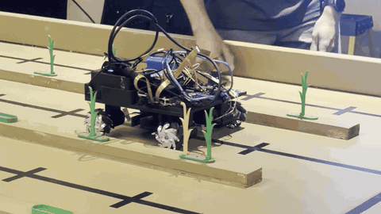

ASABE Agricultural Robotics Challenge Robot '26
Fully autonomous cornfield robot — line following, plant classification, and precision removal

Why
Built for the ASABE Student Robotics Challenge 2026 — Standard Division. The task: traverse a 5-lane simulated cornfield, identify bad (yellow) corn plants among good (green) ones, and remove only the bad ones using a precision actuator — all autonomously, as fast as possible.
As VP of the MSU Precision Agriculture Robotics Club (PARC), I led the team across mechanical, electrical, and software subteams from initial design through competition-ready testing. The result is a fully autonomous robot built on a custom 3D-printed chassis, Mecanum wheels for omnidirectional movement, and a ROS2 pub/sub architecture tying navigation, vision, and actuation together.
Watch
Full autonomous run — line following, plant detection, and bad-plant removal across the competition field.
With
📡 Sense
- 2× HBV CAM V2101 V11
Front camera: line following
Side camera: row transition
💻 Think
- Jetson Nano Orin
YOLO detection · ROS2 nodes · camera processing - Arduino Mega
5 motor controllers via GPIO
⚙️ Act
- 4× FIT0441 Gearmotors
60mm Mecanum wheels — omnidirectional drive - Plant Removal System
Lateral slide + rotational end effector lifts bad plants off magnetic base
Control Flow
- Follow — detect_node reads front camera, publishes line state; drive_node runs PID to minimize pixel tracking error
- Detect — YOLO model classifies each plant base as Green Corn, Yellow Corn, or empty
- Decide — on Yellow Corn detection, drive_node halts robot and triggers actuation sequence
- Remove — actuator slides laterally, aligns prongs, rotates to lift bad plant off magnetic base, resets
- Transition — at row end, detect_node switches to side camera to navigate to the next lane
Wrinkles
Live Detection vs. Training Accuracy
Challenge — YOLO trained on 255 still images under controlled lighting. Live camera conditions introduced lighting variance that dropped precision/recall below training metrics.
Solution — Identified the gap between static image training and live camera inference. Planned re-training with augmented lighting conditions for future iterations; adjusted confidence thresholds for the competition environment.
Actuation Alignment Tolerance
Challenge — The end effector prongs had to align precisely with the plant base center — too far off and the plant wouldn't lift cleanly off its magnet.
Solution — Simplified the actuation system to a single-axis movement (horizontal + one rotational axis), minimizing degrees of freedom and error accumulation compared to a multi-DOF robotic arm. Tuned stop position using bounding box center coordinates from the vision system.
Wins
Tested on a full-scale replica of the ASABE competition arena.
- Fastest run: 62.63 seconds end-to-end
- Average time per row: 11.37 seconds
- YOLO mAP: 0.991 overall — 0.995 Base · 0.984 Green · 0.995 Yellow
- Plant ID scoring: projected 100% singles · 90% doubles
- Navigation: reliable line following across all documented test runs
Read the Full Design Report →
Which
🔧 Mechanical
- Custom chassis — Fusion 360, Bambu Labs P2S, PLA+
- Square form factor housing all electronics + batteries
- 4× motor mounts for Mecanum wheels
- Camera mounts + center wire pass-through
- Actuator housing on underside
⚡ Hardware
- Jetson Nano Orin — main compute
- Arduino Mega — motor control
- 4× FIT0441 DC Gearmotors + 60mm Mecanum wheels
- 2× HBV CAM V2101 V11 cameras
- 12V 5200mAh LiPo battery (>1 hr runtime)
- Plant removal system: lateral slide + rotational end effector
💻 Software
- ROS2 — pub/sub node architecture
- drive_node — PID line following
- detect_node — camera switching + color detection
- YOLO — plant classification (Roboflow, 255 images)
- Python — all nodes and vision pipeline
Where
Competed at the ASABE Annual International Meeting 2026 in Indianapolis, Indiana — the premier conference for agricultural, biological, and food engineers. The robot competed in the Student Robotics Challenge Standard Division against university teams from across the country.